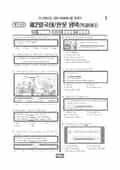

문제지


시험지를 먼저 풀어 보세요. 등급컷·표준점수·난이도는 흐리게 가려 뒀어요.
정답 변경 없음
이의신청 1문항
원문 표에서 읽어낸 문항만 적었어요. 전체 목록은 아래 답변자료 원문에 있어요.
발행 기관: 한국교육과정평가원(KICE). 파일 위치: 이 사이트가 보관한 사본 · 외부 서버 직접 링크(wdown.ebsi.co.kr). 저작권은 발행 기관에 있습니다. 원본과 다르거나 게시 중단이 필요하면 연락처로 알려 주세요. 등급컷 출처 구분은 데이터 원칙에서 설명합니다.
지난 회차의 등급컷·표준점수·난이도는 흐리게 가려 뒀어요.
막대 색은 역대 대비 난이도 · 진한 막대가 이 시험 · 막대를 누르면 그 회차로 이동
| 회차 | 1등급컷 | 표점 최고 | 1등급 표점 | 난이도 |
|---|---|---|---|---|
| 수능2018학년도이 시험 | — | 67 | 64 | 어려움 |
| 수능2017학년도 | 47 | — | — | 보통 |
| 9모2017학년도 | 47 | — | — | 쉬움 |
| 6모2017학년도 | 49 | — | — | 보통 |